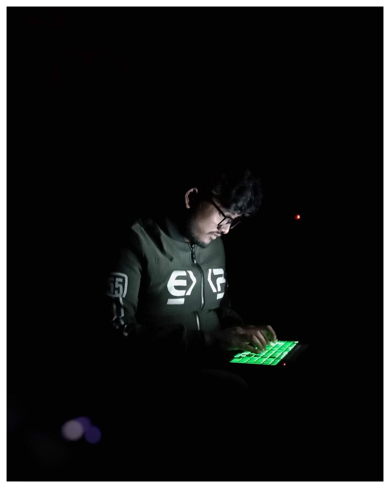

Md.Sohanur Rahman Hridoy

Md.Sohanur Rahman Hridoy is a passionate Programmer, who is enthusiastic for competitive Programming as well as developing.He is a learner also loves to tech others.He wants to be a entrepreneur in future.
- In 2001, He was born in Rajshahi, Bangladesh.
- In 2012, He completed P.S.C securing GPA:5.00 and get government talentpool scholarship.
- In 2016, He completed J.S.C securing GPA:5.00 and get government talentpool scholarship.
- In 2018, He completed S.S.C securing GPA:5.00 and get government general scholarship.
- In 2020, He completed H.S.C securing GPA:5.00 and get government general scholarship.
- Currently, He is studing at Hajee Mohammad Danesh Scince and Technology University in CSE Department.
Skills Target:
| Skill Wants to Learn |
Year In which he wants to accuqre |
| Web Development |
2024 |
| Competitive Programming |
2023-2025 |
| Android App Development |
2025-2026 |